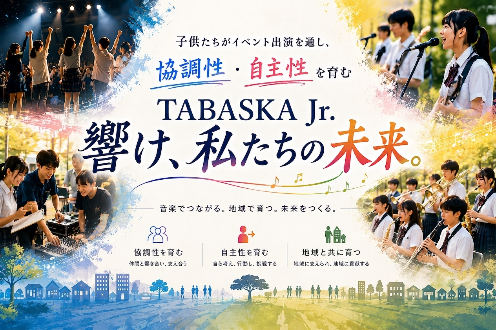

商業施設
- 鹿児島中央駅前アミュ広場
- 桜島・錦江湾ジオパークイベント など
- イオンモールKAGOSHIMA BAY
- 夏祭り
- MALL de Music
- イオンタウン姶良
- サマーコンサート
- イルミネーション点灯式
- クリスマスコンサート など
- 指宿フラワーパーク
- イルミネーション点灯式
- ウインターフェスティバル
- 吹上浜フィールドホテル
- サンセットライブ
- １周年アニバーサリーライブ
- 霧島国際ホテル
- 霧島まるしぇ
- ウェルビュー鹿児島
- キッズフェスタ など
音楽でつながる、新しい体験を。
TABASKAは2015年に結成されたMusic Performance Bandです。



Email: tabaska.band@gmail.com